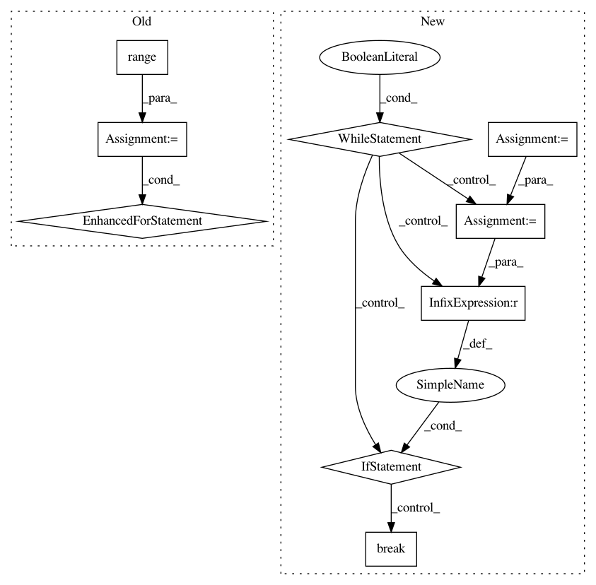

ddea47a633bf2cf97c69951467fdb1cc586485f1,lib/streamlit/Connection.py,Connection,_cleanup_on_exit,#Connection#Any#Any#,278
Before Change
LOGGER.debug("Cleanup thread waiting for main thread to end.")
main_thread.join()
FINAL_WAIT_SECONDS = 5
for i in range(FINAL_WAIT_SECONDS):
LOGGER.debug(f"Checking proxy connection status: {self._proxy_connection_status}")
if self._proxy_connection_status == Connection._PROXY_CONNECTION_DISCONNECTED:
LOGGER.debug("Local script started and exited too fast before proxy started. Waiting 1 second...")
time.sleep(1)
elif self._proxy_connection_status == Connection._PROXY_CONNECTION_CONNECTED:
// Sleep for a tiny bit to make sure we flush everything to the proxy.
time.sleep(0.1)
break
elif self._proxy_connection_status == Connection._PROXY_CONNECTION_FAILED:
LOGGER.debug("Proxy connection failed. Ending the local script.")
break
else:
LOGGER.error(f"_proxy_connection_status illegal value: {self._proxy_connection_status}")
break
LOGGER.debug("Main thread ended. Restoring excepthook.")
sys.excepthook = original_excepthook
self._loop.add_callback(setattr, self, "_is_open", False)
LOGGER.debug("Submitted callback to stop the connection thread.")
After Change
// Then wait for a certain number of seconds to connect to the proxy
// to make sure that we can flush the connection queue.
start_time = time.time()
FINAL_WAIT_SECONDS = 5.0
PROXY_CONNECTION_POLL_INTERVAL_SECONDS = 0.1
FLUSH_QUEUE_SECONDS = 0.1
while True:
elapsed_time = time.time() - start_time
if elapsed_time > FINAL_WAIT_SECONDS:
LOGGER.debug(f"Waited {FINAL_WAIT_SECONDS} for proxy "
"to connect. Exiting.")
break
elif self._proxy_connection_status == Connection._PROXY_CONNECTION_DISCONNECTED:
time.sleep(PROXY_CONNECTION_POLL_INTERVAL_SECONDS)
elif self._proxy_connection_status == Connection._PROXY_CONNECTION_CONNECTED:
// Sleep for a tiny bit to make sure we flush everything to the proxy.
LOGGER.debug("The proxy was connected. Preparing to cleanup.")
time.sleep(FLUSH_QUEUE_SECONDS)
break
elif self._proxy_connection_status == Connection._PROXY_CONNECTION_FAILED:
LOGGER.debug("Proxy connection failed. Ending the local script.")
break
else:
LOGGER.error("_proxy_connection_status illegal value: " +
str(self._proxy_connection_status))
break
LOGGER.debug("Main thread ended. Restoring excepthook.")
sys.excepthook = original_excepthook
self._loop.add_callback(setattr, self, "_is_open", False)
LOGGER.debug("Submitted callback to stop the connection thread.")
In pattern: SUPERPATTERN
Frequency: 3
Non-data size: 9
Instances
Project Name: streamlit/streamlit
Commit Name: ddea47a633bf2cf97c69951467fdb1cc586485f1
Time: 2018-10-12
Author: adrien.g.treuille@gmail.com
File Name: lib/streamlit/Connection.py
Class Name: Connection
Method Name: _cleanup_on_exit
Project Name: NVIDIA/OpenSeq2Seq
Commit Name: 80373cedf76f85b47de78080712f508a46c5345c
Time: 2018-05-16
Author: okuchaiev@nvidia.com
File Name: open_seq2seq/models/text2text_test.py
Class Name: BasicText2TextWithAttentionTest
Method Name: test_train
Project Name: NVIDIA/OpenSeq2Seq
Commit Name: 80373cedf76f85b47de78080712f508a46c5345c
Time: 2018-05-16
Author: okuchaiev@nvidia.com
File Name: open_seq2seq/models/text2text_test.py
Class Name: BasicText2TextWithAttentionTestOnHorovod
Method Name: test_train